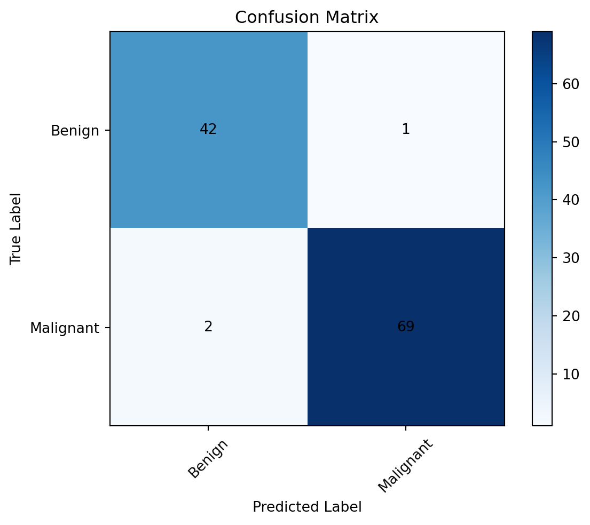
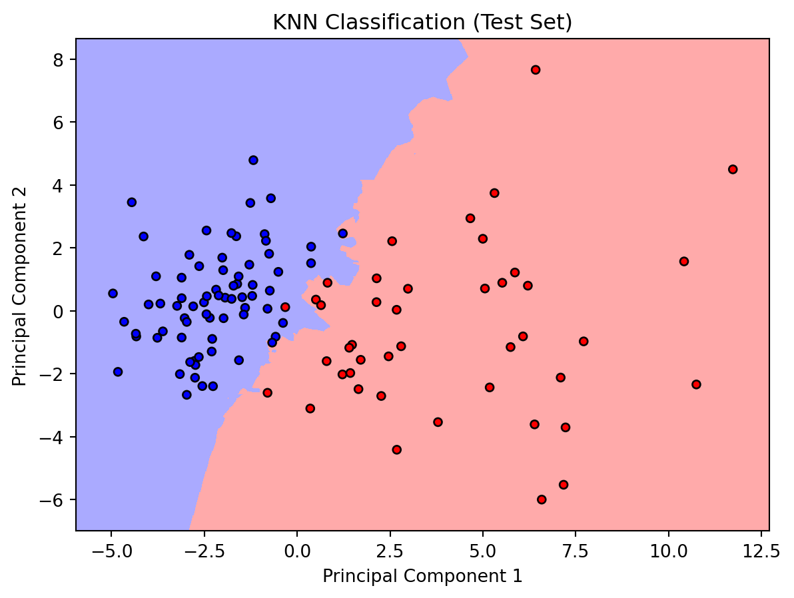
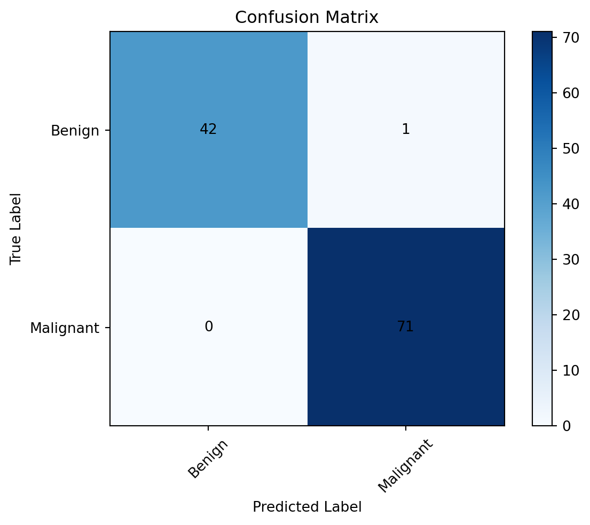
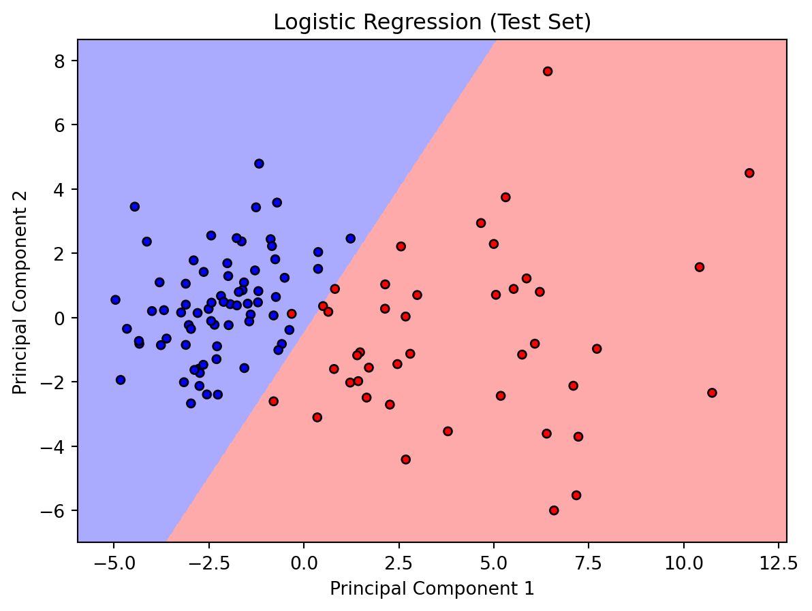
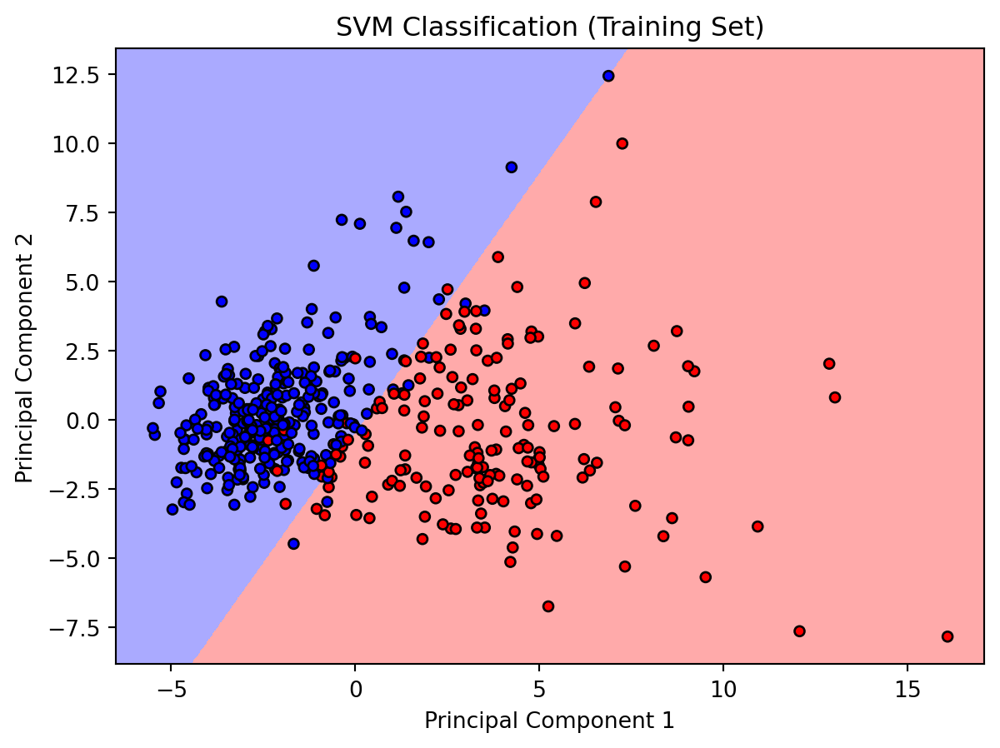
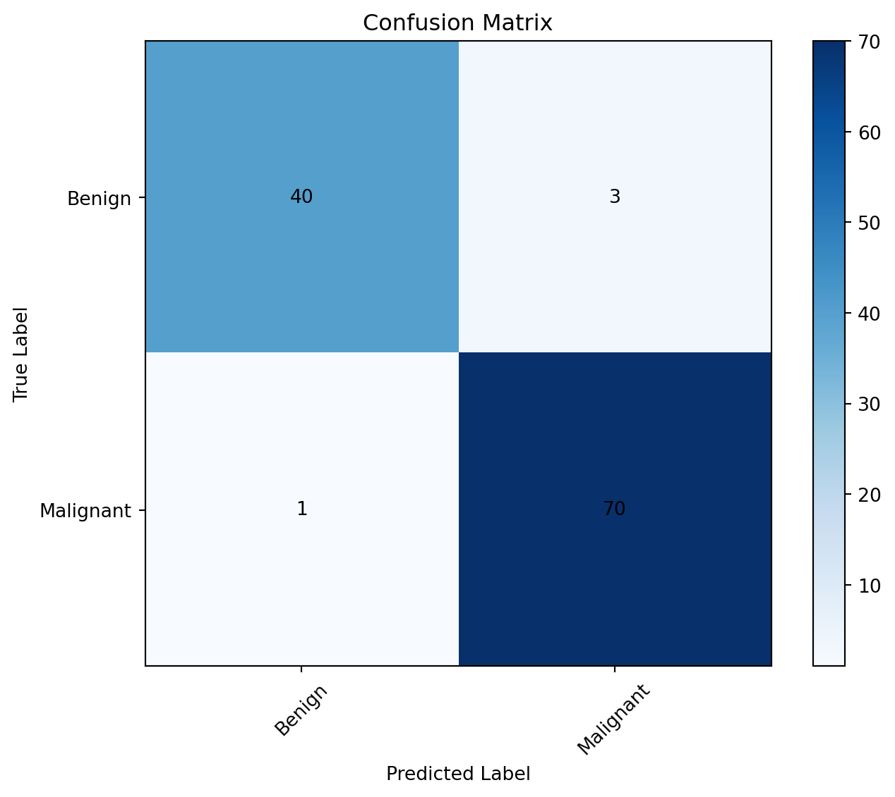
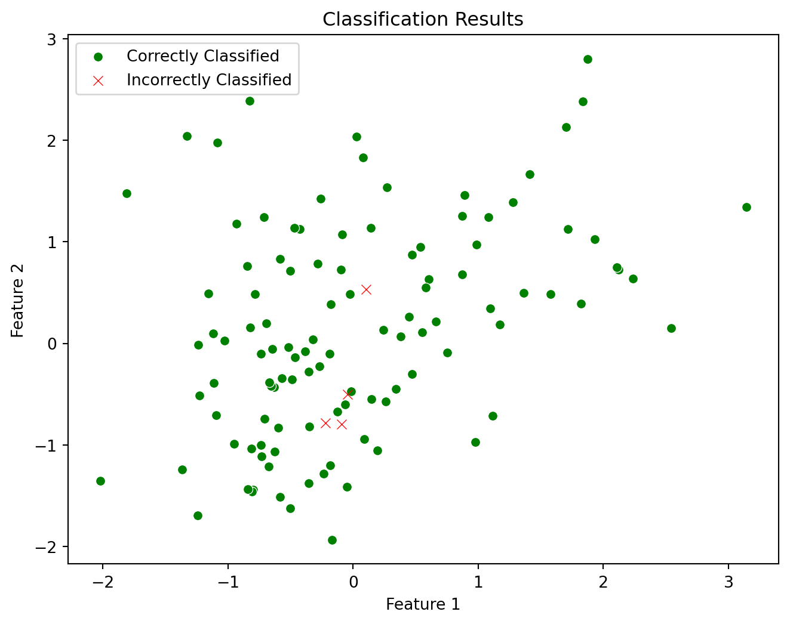
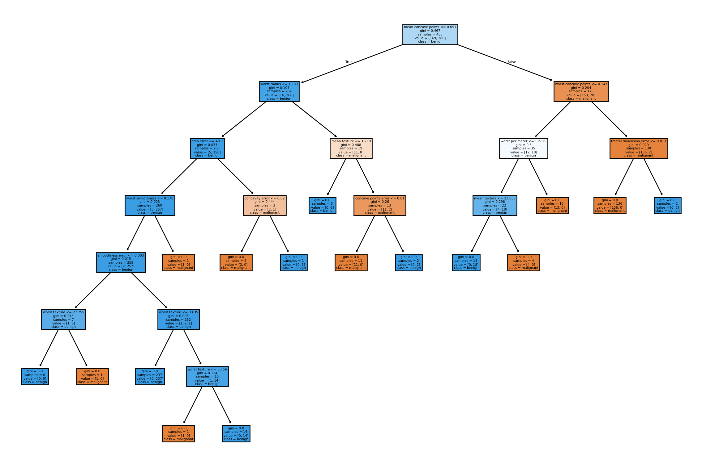

In machine learning, classification is a type of supervised learning where the algorithm is trained to categorize input data into predefined classes or categories. The goal is to learn a mapping between the input features and the corresponding class labels based on a set of labeled training data. Essentially, the algorithm learns to generalize from the provided examples and then applies this knowledge to classify new, unseen instances.
The process involves training a model on a labeled dataset, where each data point has input features and an associated class label. The model learns to recognize patterns and relationships within the input data that are indicative of the different classes. Once trained, the model can predict the class labels for new, unseen data.
Some types of Classification challenges are :
Classifying emails as spam or not
Classifying a given handwritten character to be either a known character or not
Classifying recent user behaviour as churn or not
There are various classification algorithms, each with its strengths and weaknesses, suited for different types of data and problem domains. Common algorithms include:
K-Nearest Neighbours,
Logistic Regression
Support Vector Machine
Naive Bayes
Neural Networks
Decision Trees
The choice of algorithm often depends on factors such as the nature of the data, the size of the dataset, and the desired interpretability of the model.
We will go over them one by one.
Binary Classification
A binary classification refers to those tasks which can give either of any two class labels as the output. Generally, one is considered as the normal state and the other is considered to be the abnormal state. The following examples will help you to understand them better.
Email Spam detection:
Normal State – Not Spam, Abnormal State – Spam
Conversion prediction:
Normal State – Not churned, Abnormal State – Churn
K-Nearest Neighbours
K-Nearest Neighbors (KNN) is a simple and intuitive supervised machine learning algorithm used for classification and regression tasks. It is a type of instance-based learning, also known as lazy learning, where the algorithm makes predictions based on the entire training dataset rather than learning a specific model during the training phase.
Here’s a basic overview of how the KNN algorithm works:
Training Phase:
The algorithm stores all the training examples in memory.
Each example in the training set consists of a set of features and a corresponding class label.
Prediction Phase:
When a prediction is needed for a new, unseen data point, the algorithm calculates the distances between that point and all the points in the training set. Common distance metrics include Euclidean distance, Manhattan distance, or others depending on the problem.
The “k” nearest neighbors to the new data point are identified based on the calculated distances. “K” is a user-defined parameter representing the number of neighbors to consider.
For a classification task, the algorithm assigns the class label that is most frequent among the k neighbors. In regression tasks, the algorithm may return the average or weighted average of the target values of the k neighbors.
KNN is a versatile algorithm with some key characteristics:
Non-parametric: KNN doesn’t make any assumptions about the underlying data distribution. It adapts to the data during the training phase.
Instance-based: Instead of building an explicit model during training, KNN stores the entire dataset and makes predictions based on the similarities between instances.
Simple and interpretable: KNN is easy to understand and implement, making it a good choice for quick prototyping and baseline models.
However, KNN has some limitations, such as being sensitive to irrelevant or redundant features, computation complexity (especially for large datasets), and a lack of interpretability for the decision-making process.
Choosing the appropriate value for “k” is crucial, as a small k may lead to overfitting, and a large k may introduce bias. The optimal value of “k” often depends on the specific dataset and problem at hand.
Implementation
Now, let’s implement K-Nearest neighbours on the scikit learn breast cancer dataset to classify malignant and benign cancers
import numpy as npimport matplotlib.pyplot as pltfrom sklearn.datasets import load_breast_cancerfrom sklearn.model_selection import train_test_splitfrom sklearn.preprocessing import StandardScalerfrom sklearn.neighbors import KNeighborsClassifierfrom sklearn.metrics import accuracy_score, confusion_matrixfrom sklearn.decomposition import PCAfrom matplotlib.colors import ListedColormap# Load the breast cancer datasetdata = load_breast_cancer()X = data.datay = data.target# Split the data into training and testing setsX_train, X_test, y_train, y_test = train_test_split(X, y, test_size=0.2, random_state=42)# Standardize the featuresscaler = StandardScaler()X_train_scaled = scaler.fit_transform(X_train)X_test_scaled = scaler.transform(X_test)# Apply PCA for dimensionality reductionpca = PCA(n_components=2)X_train_2d = pca.fit_transform(X_train_scaled)X_test_2d = pca.transform(X_test_scaled)# Train the KNN classifierk =5# You can choose your desired value for kknn_classifier = KNeighborsClassifier(n_neighbors=k)knn_classifier.fit(X_train_2d, y_train)# Make predictions on the test sety_pred = knn_classifier.predict(X_test_2d)# Calculate accuracy and display confusion matrixaccuracy = accuracy_score(y_test, y_pred)conf_matrix = confusion_matrix(y_test, y_pred)print(f'Accuracy: {accuracy *100:.2f}%')#print('Confusion Matrix:')#print(conf_matrix)plt.imshow(conf_matrix, interpolation='nearest', cmap=plt.cm.Blues)plt.title('Confusion Matrix')plt.colorbar()classes = ['Benign', 'Malignant']tick_marks = np.arange(len(classes))plt.xticks(tick_marks, classes, rotation=45)plt.yticks(tick_marks, classes)plt.xlabel('Predicted Label')plt.ylabel('True Label')for i inrange(len(classes)):for j inrange(len(classes)): plt.text(j, i, str(conf_matrix[i, j]), ha='center', va='center')plt.show()# Plot the decision boundariesdef plot_decision_boundary(X, y, classifier, title): h =0.02# step size in the mesh cmap_light = ListedColormap(['#FFAAAA', '#AAAAFF']) cmap_bold = ListedColormap(['#FF0000', '#0000FF']) x_min, x_max = X[:, 0].min() -1, X[:, 0].max() +1 y_min, y_max = X[:, 1].min() -1, X[:, 1].max() +1 xx, yy = np.meshgrid(np.arange(x_min, x_max, h), np.arange(y_min, y_max, h)) Z = classifier.predict(np.c_[xx.ravel(), yy.ravel()]) Z = Z.reshape(xx.shape) plt.figure() plt.pcolormesh(xx, yy, Z, cmap=cmap_light)# Plot the training points plt.scatter(X[:, 0], X[:, 1], c=y, cmap=cmap_bold, edgecolor='k', s=20) plt.xlim(xx.min(), xx.max()) plt.ylim(yy.min(), yy.max()) plt.title(title) plt.xlabel('Principal Component 1') plt.ylabel('Principal Component 2')# Plot the decision boundaries on the training setplot_decision_boundary(X_train_2d, y_train, knn_classifier, 'KNN Classification (Training Set)')plt.show()# Plot the decision boundaries on the test setplot_decision_boundary(X_test_2d, y_test, knn_classifier, 'KNN Classification (Test Set)')plt.show()
Accuracy: 97.37%


Logistic Regression
Logistic Regression is a statistical method and a popular machine learning algorithm used for binary classification problems. Despite its name, it is used for classification rather than regression. Logistic Regression models the probability that a given input belongs to a particular category. It’s widely employed in various fields, such as medicine (disease prediction), marketing (customer churn analysis), and finance (credit scoring).
Here’s a brief overview of how logistic regression works:
Sigmoid Function:
Logistic Regression uses the logistic function, also called the sigmoid function, to model the probability.
The sigmoid function has an S-shaped curve and maps any real-valued number to the range [0, 1]. The formula for the sigmoid function is: \(\sigma(z) = \frac{1}{1+ e^{-z}}\) where \(\sigma(z)\) is the linear combination of input features and weights.
Linear Combination:
Logistic Regression establishes a linear relationship between the input features and the log-odds (logit) of the probability of belonging to the positive class.
The linear combination is given by: \(z = b_0 + b_1\times x_1 + b_2\times x_2 + ... + b_n \times x_n\) where \(b_0, b_1, ... , b_n\) are the coefficients (weights) and \(x_1, x_2, ... , x_n\) are the input features.
Probability Prediction:
The output of the sigmoid function is interpreted as the probability that the given input belongs to the positive class. If \(\sigma(z)\) is close to 1, the model predicts a high probability of belonging to the positive class; if close to 0, it predicts a low probability.
Decision Boundary:
A decision boundary is established by the model based on a threshold probability (commonly 0.5). If the predicted probability is above the threshold, the instance is classified as the positive class; otherwise, it’s classified as the negative class.
Training a logistic regression model involves finding the optimal weights that maximize the likelihood of the observed data given the model. This is typically done using optimization algorithms like gradient descent.
Logistic Regression is advantageous for its simplicity, interpretability, and efficiency. However, it assumes a linear relationship between the features and the log-odds, which may not hold in all situations. Extensions like polynomial logistic regression can be used to capture non-linear relationships.
Implementation
Now, let’s implement logistic regression on the breast cancer dataset to classify malignant and benign cancers
import numpy as npimport matplotlib.pyplot as pltfrom sklearn.datasets import load_breast_cancerfrom sklearn.model_selection import train_test_splitfrom sklearn.preprocessing import StandardScalerfrom sklearn.linear_model import LogisticRegressionfrom sklearn.metrics import accuracy_score, confusion_matrixfrom sklearn.decomposition import PCAfrom matplotlib.colors import ListedColormap# Load the breast cancer datasetdata = load_breast_cancer()X = data.datay = data.target# Split the data into training and testing setsX_train, X_test, y_train, y_test = train_test_split(X, y, test_size=0.2, random_state=42)# Standardize the featuresscaler = StandardScaler()X_train_scaled = scaler.fit_transform(X_train)X_test_scaled = scaler.transform(X_test)# Apply PCA for dimensionality reductionpca = PCA(n_components=2)X_train_2d = pca.fit_transform(X_train_scaled)X_test_2d = pca.transform(X_test_scaled)# Train the Logistic Regression modellogreg_model = LogisticRegression(random_state=42)logreg_model.fit(X_train_2d, y_train) # Use the reduced dimensionality for training# Make predictions on the test sety_pred = logreg_model.predict(X_test_2d) # Use the same dimensionality for testing# Calculate accuracy and display confusion matrixaccuracy = accuracy_score(y_test, y_pred)conf_matrix = confusion_matrix(y_test, y_pred)print(f'Accuracy: {accuracy *100:.2f}%')#print('Confusion Matrix:')#print(conf_matrix)plt.imshow(conf_matrix, interpolation='nearest', cmap=plt.cm.Blues)plt.title('Confusion Matrix')plt.colorbar()classes = ['Benign', 'Malignant']tick_marks = np.arange(len(classes))plt.xticks(tick_marks, classes, rotation=45)plt.yticks(tick_marks, classes)plt.xlabel('Predicted Label')plt.ylabel('True Label')for i inrange(len(classes)):for j inrange(len(classes)): plt.text(j, i, str(conf_matrix[i, j]), ha='center', va='center')plt.show()# Plot the decision boundariesdef plot_decision_boundary(X, y, classifier, title): h =0.02# step size in the mesh cmap_light = ListedColormap(['#FFAAAA', '#AAAAFF']) cmap_bold = ListedColormap(['#FF0000', '#0000FF']) x_min, x_max = X[:, 0].min() -1, X[:, 0].max() +1 y_min, y_max = X[:, 1].min() -1, X[:, 1].max() +1 xx, yy = np.meshgrid(np.arange(x_min, x_max, h), np.arange(y_min, y_max, h)) Z = classifier.predict(np.c_[xx.ravel(), yy.ravel()]) Z = Z.reshape(xx.shape) plt.figure() plt.pcolormesh(xx, yy, Z, cmap=cmap_light)# Plot the training points plt.scatter(X[:, 0], X[:, 1], c=y, cmap=cmap_bold, edgecolor='k', s=20) plt.xlim(xx.min(), xx.max()) plt.ylim(yy.min(), yy.max()) plt.title(title) plt.xlabel('Principal Component 1') plt.ylabel('Principal Component 2')# Plot the decision boundaries for logistic regression on the training setplot_decision_boundary(X_train_2d, y_train, logreg_model, 'Logistic Regression (Training Set)')plt.show()# Plot the decision boundaries for logistic regression on the test setplot_decision_boundary(X_test_2d, y_test, logreg_model, 'Logistic Regression (Test Set)')plt.show()
Accuracy: 99.12%


Support Vector Machine
A Support Vector Machine (SVM) is a supervised machine learning algorithm used for classification and regression tasks. Its primary objective is to find a hyperplane in a high-dimensional space that best separates data points into different classes. In the context of classification, the SVM aims to create a decision boundary that maximizes the margin between classes.
Here are key concepts and features of Support Vector Machines:
Hyperplane:
In a two-dimensional space, a hyperplane is a simple line. In higher dimensions, it becomes a hyperplane, which is a subspace of one dimension less than the ambient space. For a binary classification problem, the SVM seeks the hyperplane that best separates data points of different classes.
Margin:
The margin is the distance between the hyperplane and the nearest data point from either class. SVMs strive to maximize this margin because a larger margin generally leads to better generalization performance on unseen data.
Support Vectors:
Support vectors are the data points that are closest to the hyperplane and have the most influence on determining its position. These are the critical elements for defining the margin and decision boundary.
Kernel Trick:
SVMs can handle non-linear decision boundaries by using a kernel trick. The kernel function transforms the input features into a higher-dimensional space, making it possible to find a hyperplane in this transformed space. Common kernels include polynomial kernels and radial basis function (RBF) kernels.
C Parameter:
The C parameter in SVM is a regularization parameter that controls the trade-off between achieving a smooth decision boundary and classifying the training points correctly. A smaller C value allows for a more flexible decision boundary (potentially with some misclassifications), while a larger C value enforces a stricter boundary.
SVMs have several advantages:
Effective in high-dimensional spaces.
Versatile due to the kernel trick, enabling them to handle complex relationships in the data.
Resistant to overfitting, especially in high-dimensional spaces.
Implementation
Now, lets use support vector machines to classify malignant and benign cancers
import numpy as npimport matplotlib.pyplot as pltfrom sklearn.datasets import load_breast_cancerfrom sklearn.model_selection import train_test_splitfrom sklearn.preprocessing import StandardScalerfrom sklearn.svm import SVCfrom sklearn.metrics import accuracy_score, confusion_matrixfrom sklearn.decomposition import PCAfrom matplotlib.colors import ListedColormap# Load the breast cancer datasetdata = load_breast_cancer()X = data.datay = data.target# Split the data into training and testing setsX_train, X_test, y_train, y_test = train_test_split(X, y, test_size=0.2, random_state=42)# Standardize the featuresscaler = StandardScaler()X_train_scaled = scaler.fit_transform(X_train)X_test_scaled = scaler.transform(X_test)# Apply PCA for dimensionality reduction separately on the training and testing setspca = PCA(n_components=2)X_train_2d = pca.fit_transform(X_train_scaled)X_test_2d = pca.transform(X_test_scaled)# Train the SVM modelsvm_model = SVC(kernel='linear', random_state=42)svm_model.fit(X_train_2d, y_train)# Make predictions on the test sety_pred = svm_model.predict(X_test_2d)# Calculate accuracy and display confusion matrixaccuracy = accuracy_score(y_test, y_pred)conf_matrix = confusion_matrix(y_test, y_pred)print(f'Accuracy: {accuracy *100:.2f}%')#print('Confusion Matrix:')#print(conf_matrix)plt.imshow(conf_matrix, interpolation='nearest', cmap=plt.cm.Blues)plt.title('Confusion Matrix')plt.colorbar()classes = ['Benign', 'Malignant']tick_marks = np.arange(len(classes))plt.xticks(tick_marks, classes, rotation=45)plt.yticks(tick_marks, classes)plt.xlabel('Predicted Label')plt.ylabel('True Label')for i inrange(len(classes)):for j inrange(len(classes)): plt.text(j, i, str(conf_matrix[i, j]), ha='center', va='center')plt.show()# Plot the decision boundariesdef plot_decision_boundary(X, y, classifier, title): h =0.02# step size in the mesh cmap_light = ListedColormap(['#FFAAAA', '#AAAAFF']) cmap_bold = ListedColormap(['#FF0000', '#0000FF']) x_min, x_max = X[:, 0].min() -1, X[:, 0].max() +1 y_min, y_max = X[:, 1].min() -1, X[:, 1].max() +1 xx, yy = np.meshgrid(np.arange(x_min, x_max, h), np.arange(y_min, y_max, h)) Z = classifier.predict(np.c_[xx.ravel(), yy.ravel()]) Z = Z.reshape(xx.shape) plt.figure() plt.pcolormesh(xx, yy, Z, cmap=cmap_light)# Plot the training points plt.scatter(X[:, 0], X[:, 1], c=y, cmap=cmap_bold, edgecolor='k', s=20) plt.xlim(xx.min(), xx.max()) plt.ylim(yy.min(), yy.max()) plt.title(title) plt.xlabel('Principal Component 1') plt.ylabel('Principal Component 2')# Plot the decision boundaries for SVM on the training setplot_decision_boundary(X_train_2d, y_train, svm_model, 'SVM Classification (Training Set)')plt.show()# Plot the decision boundaries for SVM on the test setplot_decision_boundary(X_test_2d, y_test, svm_model, 'SVM Classification (Test Set)')plt.show()
Accuracy: 99.12%

Naive Bayes
Naive Bayes is a family of probabilistic algorithms used for classification and, in some cases, regression tasks. It is based on Bayes’ theorem, which is a mathematical formula that describes the probability of an event, based on prior knowledge of conditions that might be related to the event.
Here are the key concepts of Naive Bayes:
Bayes’ Theorem:
Bayes’ theorem relates the conditional and marginal probabilities of random events. For a classification problem, it can be expressed as: \[P(y|X) = \frac{P(X|y) \times P(y)}{P(X)}\] where:
\(P(y|X)\) is the posterior probability of class \(y\) given the features \(X\),
\(P(X|y)\) is the likelihood of the features given the class,
\(P(y)\) is the prior probability of class \(y\),
\(P(X)\) is the probability of the features.
Naive Assumption:
The “naive” in Naive Bayes comes from the assumption that features are conditionally independent given the class label. This means that the presence of one feature is considered independent of the presence of any other feature, given the class label. While this assumption simplifies the model, it may not always hold in real-world scenarios.
Types of Naive Bayes:
There are different variants of Naive Bayes, depending on the distributional assumptions made about the data. The three most common types are:
Gaussian Naive Bayes: Assumes that the features follow a normal distribution.
Multinomial Naive Bayes: Used for discrete data, often for text classification with word frequencies.
Bernoulli Naive Bayes: Assumes binary (0 or 1) features, often used for text classification with binary term presence/absence.
Text Classification:
Naive Bayes is particularly popular in text classification tasks, such as spam filtering and sentiment analysis. It works well with high-dimensional data like word counts in documents.
Training and Prediction:
During training, Naive Bayes estimates the parameters (probabilities) from the training dataset.
During prediction, it calculates the posterior probability for each class and assigns the class with the highest probability to the input instance.
Naive Bayes is computationally efficient, simple to implement, and often performs surprisingly well, especially in text and document classification tasks. However, its performance may degrade when the independence assumption is strongly violated or when dealing with highly correlated features.
Implementation
Now, lets implement Naive Bayes to classify malignant and benign cancers using Gaussian Naive Bayes
import numpy as npimport pandas as pdimport seaborn as snsimport matplotlib.pyplot as pltfrom sklearn.datasets import load_breast_cancerfrom sklearn.model_selection import train_test_splitfrom sklearn.preprocessing import StandardScalerfrom sklearn.naive_bayes import GaussianNBfrom sklearn.metrics import accuracy_score, confusion_matrix# Load the breast cancer datasetdata = load_breast_cancer()X = data.datay = data.target# Split the data into training and testing setsX_train, X_test, y_train, y_test = train_test_split(X, y, test_size=0.2, random_state=42)# Standardize the featuresscaler = StandardScaler()X_train_scaled = scaler.fit_transform(X_train)X_test_scaled = scaler.transform(X_test)# Train the Naive Bayes modelnb_model = GaussianNB()nb_model.fit(X_train_scaled, y_train)# Make predictions on the test sety_pred = nb_model.predict(X_test_scaled)# Calculate accuracy and display confusion matrixaccuracy = accuracy_score(y_test, y_pred)conf_matrix = confusion_matrix(y_test, y_pred)print(f'Accuracy: {accuracy *100:.2f}%')# Plot Confusion Matrixplt.figure(figsize=(8, 6))plt.imshow(conf_matrix, interpolation='nearest', cmap=plt.cm.Blues)plt.title('Confusion Matrix')plt.colorbar()classes = ['Benign', 'Malignant']tick_marks = np.arange(len(classes))plt.xticks(tick_marks, classes, rotation=45)plt.yticks(tick_marks, classes)plt.xlabel('Predicted Label')plt.ylabel('True Label')for i inrange(len(classes)):for j inrange(len(classes)): plt.text(j, i, str(conf_matrix[i, j]), ha='center', va='center')plt.show()# Plot Classification Resultsplt.figure(figsize=(8, 6))correctly_classified = (y_test == y_pred)incorrectly_classified = (y_test != y_pred)# Plot correctly classified pointssns.scatterplot(x=X_test_scaled[correctly_classified, 0], y=X_test_scaled[correctly_classified, 1], color='green', label='Correctly Classified', marker='o')# Plot incorrectly classified pointssns.scatterplot(x=X_test_scaled[incorrectly_classified, 0], y=X_test_scaled[incorrectly_classified, 1], color='red', label='Incorrectly Classified', marker='x')plt.title('Classification Results')plt.xlabel('Feature 1')plt.ylabel('Feature 2')plt.legend()plt.show()
Accuracy: 96.49%


Neural Networks
Neural networks, or artificial neural networks (ANNs), are a class of machine learning models inspired by the structure and functioning of the human brain. They consist of interconnected nodes, known as neurons or artificial neurons, organized into layers. Neural networks are a fundamental component of deep learning, a subfield of machine learning that focuses on models with multiple layers, also known as deep neural networks.
Here are the key components and concepts related to neural networks:
Neurons:
Neurons are the basic units of a neural network. They receive inputs, perform a weighted sum of those inputs, apply an activation function, and produce an output. The output is then passed to the next layer of neurons.
Layers:
Neural networks are organized into layers, typically divided into three types:
Input Layer: Neurons that receive the initial input data.
Hidden Layers: Neurons that process the input data. Deep neural networks have multiple hidden layers.
Output Layer: Neurons that produce the final output of the network.
Connections and Weights:
Neurons in one layer are connected to neurons in the next layer by connections. Each connection has an associated weight that determines the strength of the connection. During training, these weights are adjusted to optimize the network’s performance.
Activation Function:
The activation function introduces non-linearity to the network, allowing it to learn complex relationships in the data. Common activation functions include sigmoid, hyperbolic tangent (tanh), and rectified linear unit (ReLU).
Feedforward and Backpropagation:
During the feedforward phase, input data is passed through the network to generate predictions. The predictions are compared to the actual targets, and the error is calculated.
Backpropagation is the process of iteratively adjusting the weights of the connections based on the calculated error. This is done using optimization algorithms like gradient descent to minimize the error and improve the model’s performance.
Deep Learning:
Neural networks with multiple hidden layers are referred to as deep neural networks. The depth of the network allows it to learn hierarchical features and representations, making it capable of handling complex tasks.
Types of Neural Networks:
Different types of neural networks are designed for specific tasks. For example:
Feedforward Neural Networks (FNN): Standard neural networks where information flows in one direction, from input to output.
Convolutional Neural Networks (CNN): Effective for image-related tasks, with specialized layers for feature extraction.
Recurrent Neural Networks (RNN): Suitable for sequential data, with connections that form cycles to capture temporal dependencies.
Neural networks have achieved remarkable success in various domains, including image and speech recognition, natural language processing, and playing games. Their power lies in their ability to automatically learn complex patterns and representations from data, enabling them to excel in tasks that traditional algorithms may struggle with.
Implementation
Now, let’s use a neural network to classify malignant or benign cancers
import numpy as npimport tensorflow as tffrom sklearn.model_selection import train_test_splitfrom sklearn.preprocessing import StandardScalerfrom sklearn.datasets import load_breast_cancerfrom tensorflow.keras.utils import plot_modelimport matplotlib.pyplot as plt# Load Breast Cancer datasetdata = load_breast_cancer()X = data.datay = data.target# Split the data into training and testing setsX_train, X_test, y_train, y_test = train_test_split(X, y, test_size=0.2, random_state=42)# Standardize the featuresscaler = StandardScaler()X_train = scaler.fit_transform(X_train)X_test = scaler.transform(X_test)# Build the neural network model using Kerasmodel = tf.keras.Sequential([ tf.keras.layers.Dense(64, activation='relu', input_shape=(X_train.shape[1],)), tf.keras.layers.Dropout(0.5), tf.keras.layers.Dense(32, activation='relu'), tf.keras.layers.Dropout(0.5), tf.keras.layers.Dense(1, activation='sigmoid') # Binary classification, so use 'sigmoid' activation])# Compile the modelmodel.compile(optimizer='adam', loss='binary_crossentropy', metrics=['accuracy'])# Visualize the model architectureplot_model(model, to_file='neural_network.png', show_shapes=True, show_layer_names=True)# Train the modelhistory = model.fit(X_train, y_train, epochs=50, batch_size=32, validation_data=(X_test, y_test), verbose=0)# Evaluate the model on the test setloss, accuracy = model.evaluate(X_test, y_test)print(f"Test Loss: {loss:.4f}")print(f"Test Accuracy: {accuracy:.4f}")# Plot training historyplt.figure(figsize=(12, 5))# Plot training & validation accuracy valuesplt.subplot(1, 2, 1)plt.plot(history.history['accuracy'])plt.plot(history.history['val_accuracy'])plt.title('Model accuracy')plt.xlabel('Epoch')plt.ylabel('Accuracy')plt.legend(['Train', 'Test'], loc='upper left')# Plot training & validation loss valuesplt.subplot(1, 2, 2)plt.plot(history.history['loss'])plt.plot(history.history['val_loss'])plt.title('Model loss')plt.xlabel('Epoch')plt.ylabel('Loss')plt.legend(['Train', 'Test'], loc='upper left')plt.tight_layout()plt.show()
/opt/anaconda3/envs/cwq/lib/python3.13/site-packages/google/protobuf/runtime_version.py:98: UserWarning: Protobuf gencode version 5.28.3 is exactly one major version older than the runtime version 6.31.1 at tensorflow/core/framework/attr_value.proto. Please update the gencode to avoid compatibility violations in the next runtime release.
warnings.warn(
/opt/anaconda3/envs/cwq/lib/python3.13/site-packages/google/protobuf/runtime_version.py:98: UserWarning: Protobuf gencode version 5.28.3 is exactly one major version older than the runtime version 6.31.1 at tensorflow/core/framework/tensor.proto. Please update the gencode to avoid compatibility violations in the next runtime release.
warnings.warn(
/opt/anaconda3/envs/cwq/lib/python3.13/site-packages/google/protobuf/runtime_version.py:98: UserWarning: Protobuf gencode version 5.28.3 is exactly one major version older than the runtime version 6.31.1 at tensorflow/core/framework/resource_handle.proto. Please update the gencode to avoid compatibility violations in the next runtime release.
warnings.warn(
/opt/anaconda3/envs/cwq/lib/python3.13/site-packages/google/protobuf/runtime_version.py:98: UserWarning: Protobuf gencode version 5.28.3 is exactly one major version older than the runtime version 6.31.1 at tensorflow/core/framework/tensor_shape.proto. Please update the gencode to avoid compatibility violations in the next runtime release.
warnings.warn(
/opt/anaconda3/envs/cwq/lib/python3.13/site-packages/google/protobuf/runtime_version.py:98: UserWarning: Protobuf gencode version 5.28.3 is exactly one major version older than the runtime version 6.31.1 at tensorflow/core/framework/types.proto. Please update the gencode to avoid compatibility violations in the next runtime release.
warnings.warn(
/opt/anaconda3/envs/cwq/lib/python3.13/site-packages/google/protobuf/runtime_version.py:98: UserWarning: Protobuf gencode version 5.28.3 is exactly one major version older than the runtime version 6.31.1 at tensorflow/core/framework/full_type.proto. Please update the gencode to avoid compatibility violations in the next runtime release.
warnings.warn(
/opt/anaconda3/envs/cwq/lib/python3.13/site-packages/google/protobuf/runtime_version.py:98: UserWarning: Protobuf gencode version 5.28.3 is exactly one major version older than the runtime version 6.31.1 at tensorflow/core/framework/function.proto. Please update the gencode to avoid compatibility violations in the next runtime release.
warnings.warn(
/opt/anaconda3/envs/cwq/lib/python3.13/site-packages/google/protobuf/runtime_version.py:98: UserWarning: Protobuf gencode version 5.28.3 is exactly one major version older than the runtime version 6.31.1 at tensorflow/core/framework/node_def.proto. Please update the gencode to avoid compatibility violations in the next runtime release.
warnings.warn(
/opt/anaconda3/envs/cwq/lib/python3.13/site-packages/google/protobuf/runtime_version.py:98: UserWarning: Protobuf gencode version 5.28.3 is exactly one major version older than the runtime version 6.31.1 at tensorflow/core/framework/op_def.proto. Please update the gencode to avoid compatibility violations in the next runtime release.
warnings.warn(
/opt/anaconda3/envs/cwq/lib/python3.13/site-packages/google/protobuf/runtime_version.py:98: UserWarning: Protobuf gencode version 5.28.3 is exactly one major version older than the runtime version 6.31.1 at tensorflow/core/framework/graph.proto. Please update the gencode to avoid compatibility violations in the next runtime release.
warnings.warn(
/opt/anaconda3/envs/cwq/lib/python3.13/site-packages/google/protobuf/runtime_version.py:98: UserWarning: Protobuf gencode version 5.28.3 is exactly one major version older than the runtime version 6.31.1 at tensorflow/core/framework/graph_debug_info.proto. Please update the gencode to avoid compatibility violations in the next runtime release.
warnings.warn(
/opt/anaconda3/envs/cwq/lib/python3.13/site-packages/google/protobuf/runtime_version.py:98: UserWarning: Protobuf gencode version 5.28.3 is exactly one major version older than the runtime version 6.31.1 at tensorflow/core/framework/versions.proto. Please update the gencode to avoid compatibility violations in the next runtime release.
warnings.warn(
/opt/anaconda3/envs/cwq/lib/python3.13/site-packages/google/protobuf/runtime_version.py:98: UserWarning: Protobuf gencode version 5.28.3 is exactly one major version older than the runtime version 6.31.1 at tensorflow/core/protobuf/config.proto. Please update the gencode to avoid compatibility violations in the next runtime release.
warnings.warn(
/opt/anaconda3/envs/cwq/lib/python3.13/site-packages/google/protobuf/runtime_version.py:98: UserWarning: Protobuf gencode version 5.28.3 is exactly one major version older than the runtime version 6.31.1 at xla/tsl/protobuf/coordination_config.proto. Please update the gencode to avoid compatibility violations in the next runtime release.
warnings.warn(
/opt/anaconda3/envs/cwq/lib/python3.13/site-packages/google/protobuf/runtime_version.py:98: UserWarning: Protobuf gencode version 5.28.3 is exactly one major version older than the runtime version 6.31.1 at tensorflow/core/framework/cost_graph.proto. Please update the gencode to avoid compatibility violations in the next runtime release.
warnings.warn(
/opt/anaconda3/envs/cwq/lib/python3.13/site-packages/google/protobuf/runtime_version.py:98: UserWarning: Protobuf gencode version 5.28.3 is exactly one major version older than the runtime version 6.31.1 at tensorflow/core/framework/step_stats.proto. Please update the gencode to avoid compatibility violations in the next runtime release.
warnings.warn(
/opt/anaconda3/envs/cwq/lib/python3.13/site-packages/google/protobuf/runtime_version.py:98: UserWarning: Protobuf gencode version 5.28.3 is exactly one major version older than the runtime version 6.31.1 at tensorflow/core/framework/allocation_description.proto. Please update the gencode to avoid compatibility violations in the next runtime release.
warnings.warn(
/opt/anaconda3/envs/cwq/lib/python3.13/site-packages/google/protobuf/runtime_version.py:98: UserWarning: Protobuf gencode version 5.28.3 is exactly one major version older than the runtime version 6.31.1 at tensorflow/core/framework/tensor_description.proto. Please update the gencode to avoid compatibility violations in the next runtime release.
warnings.warn(
/opt/anaconda3/envs/cwq/lib/python3.13/site-packages/google/protobuf/runtime_version.py:98: UserWarning: Protobuf gencode version 5.28.3 is exactly one major version older than the runtime version 6.31.1 at tensorflow/core/protobuf/cluster.proto. Please update the gencode to avoid compatibility violations in the next runtime release.
warnings.warn(
/opt/anaconda3/envs/cwq/lib/python3.13/site-packages/google/protobuf/runtime_version.py:98: UserWarning: Protobuf gencode version 5.28.3 is exactly one major version older than the runtime version 6.31.1 at tensorflow/core/protobuf/debug.proto. Please update the gencode to avoid compatibility violations in the next runtime release.
warnings.warn(
You must install pydot (`pip install pydot`) for `plot_model` to work.
/opt/anaconda3/envs/cwq/lib/python3.13/site-packages/keras/src/layers/core/dense.py:92: UserWarning: Do not pass an `input_shape`/`input_dim` argument to a layer. When using Sequential models, prefer using an `Input(shape)` object as the first layer in the model instead.
super().__init__(activity_regularizer=activity_regularizer, **kwargs)
A Decision Tree is a supervised machine learning algorithm used for both classification and regression tasks. It’s a tree-like structure where each internal node represents a decision based on the value of a particular feature, each branch represents the outcome of that decision, and each leaf node represents the final decision or prediction.
Here are the key concepts of decision trees:
Node Types:
Root Node: The topmost node that makes the initial decision.
Internal Nodes: Nodes that represent decisions based on feature values.
Leaf Nodes: Terminal nodes that provide the final prediction or decision.
Decision Criteria:
At each internal node, a decision is made based on the value of a specific feature. The goal is to make decisions that result in the most accurate predictions.
Splitting:
The process of dividing a node into two or more child nodes based on a chosen feature and a threshold value. The goal is to increase the homogeneity of the target variable within each resulting node.
Homogeneity and Impurity:
Decision trees aim to create nodes that are as pure as possible. Impurity measures, such as Gini impurity or entropy, are used to quantify the homogeneity within a node. The goal is to minimize impurity during the tree-building process.
Tree Pruning:
Decision trees can become too complex and overfit the training data. Pruning involves removing some branches (subtrees) from the tree to prevent overfitting and improve generalization to new data.
Categorical and Continuous Variables:
Decision trees can handle both categorical and continuous features. For categorical features, the tree performs a split for each category, while for continuous features, the tree finds an optimal threshold to split the data.
Ensemble Methods:
Decision trees are often used in ensemble methods, such as Random Forests and Gradient Boosting, to enhance predictive performance. Ensemble methods combine the predictions of multiple decision trees to achieve more robust and accurate results.
Interpretability:
Decision trees are known for their interpretability. The structure of the tree provides a clear and intuitive representation of the decision-making process, making it easy to understand how the model arrives at its predictions.
Decision trees are used in various applications, including finance, healthcare, and marketing. They are particularly useful when dealing with a mix of categorical and numerical features and are valued for their simplicity, interpretability, and ability to handle non-linear relationships in the data.
Implementation
Now lets use a Decision Tree to classify malignant and benign cancers
from sklearn.datasets import load_breast_cancerfrom sklearn.model_selection import train_test_splitfrom sklearn.tree import DecisionTreeClassifierfrom sklearn.metrics import accuracy_score, confusion_matriximport matplotlib.pyplot as pltfrom sklearn import tree# Load Breast Cancer datasetdata = load_breast_cancer()X = data.datay = data.target# Split the data into training and testing setsX_train, X_test, y_train, y_test = train_test_split(X, y, test_size=0.2, random_state=42)# Create a decision tree classifierclf = DecisionTreeClassifier(random_state=42)# Train the classifierclf.fit(X_train, y_train)# Make predictions on the test sety_pred = clf.predict(X_test)# Evaluate the accuracyaccuracy = accuracy_score(y_test, y_pred)print(f"Test Accuracy: {accuracy:.4f}")# Plot the confusion matrixconf_mat = confusion_matrix(y_test, y_pred)plt.imshow(conf_mat, interpolation='nearest', cmap=plt.cm.Blues)plt.title('Confusion Matrix')plt.colorbar()classes = ['Benign', 'Malignant']tick_marks = np.arange(len(classes))plt.xticks(tick_marks, classes, rotation=45)plt.yticks(tick_marks, classes)plt.xlabel('Predicted Label')plt.ylabel('True Label')for i inrange(len(classes)):for j inrange(len(classes)): plt.text(j, i, str(conf_mat[i, j]), ha='center', va='center')plt.show()# Plot the decision treeplt.figure(figsize=(15, 10))tree.plot_tree(clf, feature_names=data.feature_names, class_names=data.target_names, filled=True)plt.show()
Test Accuracy: 0.9474

Source Code
---title: "Classification"author: "Daniel A. Udekwe"date: "2023-11-24"categories: [data, code, analysis]image: "classification.png"---In machine learning, classification is a type of supervised learning where the algorithm is trained to categorize input data into predefined classes or categories. The goal is to learn a mapping between the input features and the corresponding class labels based on a set of labeled training data. Essentially, the algorithm learns to generalize from the provided examples and then applies this knowledge to classify new, unseen instances.The process involves training a model on a labeled dataset, where each data point has input features and an associated class label. The model learns to recognize patterns and relationships within the input data that are indicative of the different classes. Once trained, the model can predict the class labels for new, unseen data.Some types of Classification challenges are :- Classifying emails as spam or not- Classifying a given handwritten character to be either a known character or not- Classifying recent user behaviour as churn or notThere are various classification algorithms, each with its strengths and weaknesses, suited for different types of data and problem domains. Common algorithms include:- K-Nearest Neighbours,- Logistic Regression- Support Vector Machine- Naive Bayes- Neural Networks- Decision TreesThe choice of algorithm often depends on factors such as the nature of the data, the size of the dataset, and the desired interpretability of the model.We will go over them one by one.# **Binary Classification**A binary classification refers to those tasks which can give either of any two class labels as the output. Generally, one is considered as the normal state and the other is considered to be the abnormal state. The following examples will help you to understand them better.- Email Spam detection: Normal State -- Not Spam, Abnormal State -- Spam- Conversion prediction: Normal State -- Not churned, Abnormal State -- Churn## K-Nearest NeighboursK-Nearest Neighbors (KNN) is a simple and intuitive supervised machine learning algorithm used for classification and regression tasks. It is a type of instance-based learning, also known as lazy learning, where the algorithm makes predictions based on the entire training dataset rather than learning a specific model during the training phase.Here's a basic overview of how the KNN algorithm works:1. **Training Phase:** - The algorithm stores all the training examples in memory. - Each example in the training set consists of a set of features and a corresponding class label.2. **Prediction Phase:** - When a prediction is needed for a new, unseen data point, the algorithm calculates the distances between that point and all the points in the training set. Common distance metrics include Euclidean distance, Manhattan distance, or others depending on the problem. - The "k" nearest neighbors to the new data point are identified based on the calculated distances. "K" is a user-defined parameter representing the number of neighbors to consider. - For a classification task, the algorithm assigns the class label that is most frequent among the k neighbors. In regression tasks, the algorithm may return the average or weighted average of the target values of the k neighbors.KNN is a versatile algorithm with some key characteristics:- **Non-parametric:** KNN doesn't make any assumptions about the underlying data distribution. It adapts to the data during the training phase.- **Instance-based:** Instead of building an explicit model during training, KNN stores the entire dataset and makes predictions based on the similarities between instances.- **Simple and interpretable:** KNN is easy to understand and implement, making it a good choice for quick prototyping and baseline models.However, KNN has some limitations, such as being sensitive to irrelevant or redundant features, computation complexity (especially for large datasets), and a lack of interpretability for the decision-making process.Choosing the appropriate value for "k" is crucial, as a small k may lead to overfitting, and a large k may introduce bias. The optimal value of "k" often depends on the specific dataset and problem at hand.### ImplementationNow, let's implement K-Nearest neighbours on the scikit learn breast cancer dataset to classify malignant and benign cancers```{python}import numpy as npimport matplotlib.pyplot as pltfrom sklearn.datasets import load_breast_cancerfrom sklearn.model_selection import train_test_splitfrom sklearn.preprocessing import StandardScalerfrom sklearn.neighbors import KNeighborsClassifierfrom sklearn.metrics import accuracy_score, confusion_matrixfrom sklearn.decomposition import PCAfrom matplotlib.colors import ListedColormap# Load the breast cancer datasetdata = load_breast_cancer()X = data.datay = data.target# Split the data into training and testing setsX_train, X_test, y_train, y_test = train_test_split(X, y, test_size=0.2, random_state=42)# Standardize the featuresscaler = StandardScaler()X_train_scaled = scaler.fit_transform(X_train)X_test_scaled = scaler.transform(X_test)# Apply PCA for dimensionality reductionpca = PCA(n_components=2)X_train_2d = pca.fit_transform(X_train_scaled)X_test_2d = pca.transform(X_test_scaled)# Train the KNN classifierk =5# You can choose your desired value for kknn_classifier = KNeighborsClassifier(n_neighbors=k)knn_classifier.fit(X_train_2d, y_train)# Make predictions on the test sety_pred = knn_classifier.predict(X_test_2d)# Calculate accuracy and display confusion matrixaccuracy = accuracy_score(y_test, y_pred)conf_matrix = confusion_matrix(y_test, y_pred)print(f'Accuracy: {accuracy *100:.2f}%')#print('Confusion Matrix:')#print(conf_matrix)plt.imshow(conf_matrix, interpolation='nearest', cmap=plt.cm.Blues)plt.title('Confusion Matrix')plt.colorbar()classes = ['Benign', 'Malignant']tick_marks = np.arange(len(classes))plt.xticks(tick_marks, classes, rotation=45)plt.yticks(tick_marks, classes)plt.xlabel('Predicted Label')plt.ylabel('True Label')for i inrange(len(classes)):for j inrange(len(classes)): plt.text(j, i, str(conf_matrix[i, j]), ha='center', va='center')plt.show()# Plot the decision boundariesdef plot_decision_boundary(X, y, classifier, title): h =0.02# step size in the mesh cmap_light = ListedColormap(['#FFAAAA', '#AAAAFF']) cmap_bold = ListedColormap(['#FF0000', '#0000FF']) x_min, x_max = X[:, 0].min() -1, X[:, 0].max() +1 y_min, y_max = X[:, 1].min() -1, X[:, 1].max() +1 xx, yy = np.meshgrid(np.arange(x_min, x_max, h), np.arange(y_min, y_max, h)) Z = classifier.predict(np.c_[xx.ravel(), yy.ravel()]) Z = Z.reshape(xx.shape) plt.figure() plt.pcolormesh(xx, yy, Z, cmap=cmap_light)# Plot the training points plt.scatter(X[:, 0], X[:, 1], c=y, cmap=cmap_bold, edgecolor='k', s=20) plt.xlim(xx.min(), xx.max()) plt.ylim(yy.min(), yy.max()) plt.title(title) plt.xlabel('Principal Component 1') plt.ylabel('Principal Component 2')# Plot the decision boundaries on the training setplot_decision_boundary(X_train_2d, y_train, knn_classifier, 'KNN Classification (Training Set)')plt.show()# Plot the decision boundaries on the test setplot_decision_boundary(X_test_2d, y_test, knn_classifier, 'KNN Classification (Test Set)')plt.show()```## Logistic RegressionLogistic Regression is a statistical method and a popular machine learning algorithm used for binary classification problems. Despite its name, it is used for classification rather than regression. Logistic Regression models the probability that a given input belongs to a particular category. It's widely employed in various fields, such as medicine (disease prediction), marketing (customer churn analysis), and finance (credit scoring).Here's a brief overview of how logistic regression works:1. **Sigmoid Function:** - Logistic Regression uses the logistic function, also called the sigmoid function, to model the probability. - The sigmoid function has an S-shaped curve and maps any real-valued number to the range \[0, 1\]. The formula for the sigmoid function is: $\sigma(z) = \frac{1}{1+ e^{-z}}$ where $\sigma(z)$ is the linear combination of input features and weights.2. **Linear Combination:** - Logistic Regression establishes a linear relationship between the input features and the log-odds (logit) of the probability of belonging to the positive class. - The linear combination is given by: $z = b_0 + b_1\times x_1 + b_2\times x_2 + ... + b_n \times x_n$ where $b_0, b_1, ... , b_n$ are the coefficients (weights) and $x_1, x_2, ... , x_n$ are the input features.3. **Probability Prediction:** - The output of the sigmoid function is interpreted as the probability that the given input belongs to the positive class. If $\sigma(z)$ is close to 1, the model predicts a high probability of belonging to the positive class; if close to 0, it predicts a low probability.4. **Decision Boundary:** - A decision boundary is established by the model based on a threshold probability (commonly 0.5). If the predicted probability is above the threshold, the instance is classified as the positive class; otherwise, it's classified as the negative class.Training a logistic regression model involves finding the optimal weights that maximize the likelihood of the observed data given the model. This is typically done using optimization algorithms like gradient descent.Logistic Regression is advantageous for its simplicity, interpretability, and efficiency. However, it assumes a linear relationship between the features and the log-odds, which may not hold in all situations. Extensions like polynomial logistic regression can be used to capture non-linear relationships.### ImplementationNow, let's implement logistic regression on the breast cancer dataset to classify malignant and benign cancers```{python}import numpy as npimport matplotlib.pyplot as pltfrom sklearn.datasets import load_breast_cancerfrom sklearn.model_selection import train_test_splitfrom sklearn.preprocessing import StandardScalerfrom sklearn.linear_model import LogisticRegressionfrom sklearn.metrics import accuracy_score, confusion_matrixfrom sklearn.decomposition import PCAfrom matplotlib.colors import ListedColormap# Load the breast cancer datasetdata = load_breast_cancer()X = data.datay = data.target# Split the data into training and testing setsX_train, X_test, y_train, y_test = train_test_split(X, y, test_size=0.2, random_state=42)# Standardize the featuresscaler = StandardScaler()X_train_scaled = scaler.fit_transform(X_train)X_test_scaled = scaler.transform(X_test)# Apply PCA for dimensionality reductionpca = PCA(n_components=2)X_train_2d = pca.fit_transform(X_train_scaled)X_test_2d = pca.transform(X_test_scaled)# Train the Logistic Regression modellogreg_model = LogisticRegression(random_state=42)logreg_model.fit(X_train_2d, y_train) # Use the reduced dimensionality for training# Make predictions on the test sety_pred = logreg_model.predict(X_test_2d) # Use the same dimensionality for testing# Calculate accuracy and display confusion matrixaccuracy = accuracy_score(y_test, y_pred)conf_matrix = confusion_matrix(y_test, y_pred)print(f'Accuracy: {accuracy *100:.2f}%')#print('Confusion Matrix:')#print(conf_matrix)plt.imshow(conf_matrix, interpolation='nearest', cmap=plt.cm.Blues)plt.title('Confusion Matrix')plt.colorbar()classes = ['Benign', 'Malignant']tick_marks = np.arange(len(classes))plt.xticks(tick_marks, classes, rotation=45)plt.yticks(tick_marks, classes)plt.xlabel('Predicted Label')plt.ylabel('True Label')for i inrange(len(classes)):for j inrange(len(classes)): plt.text(j, i, str(conf_matrix[i, j]), ha='center', va='center')plt.show()# Plot the decision boundariesdef plot_decision_boundary(X, y, classifier, title): h =0.02# step size in the mesh cmap_light = ListedColormap(['#FFAAAA', '#AAAAFF']) cmap_bold = ListedColormap(['#FF0000', '#0000FF']) x_min, x_max = X[:, 0].min() -1, X[:, 0].max() +1 y_min, y_max = X[:, 1].min() -1, X[:, 1].max() +1 xx, yy = np.meshgrid(np.arange(x_min, x_max, h), np.arange(y_min, y_max, h)) Z = classifier.predict(np.c_[xx.ravel(), yy.ravel()]) Z = Z.reshape(xx.shape) plt.figure() plt.pcolormesh(xx, yy, Z, cmap=cmap_light)# Plot the training points plt.scatter(X[:, 0], X[:, 1], c=y, cmap=cmap_bold, edgecolor='k', s=20) plt.xlim(xx.min(), xx.max()) plt.ylim(yy.min(), yy.max()) plt.title(title) plt.xlabel('Principal Component 1') plt.ylabel('Principal Component 2')# Plot the decision boundaries for logistic regression on the training setplot_decision_boundary(X_train_2d, y_train, logreg_model, 'Logistic Regression (Training Set)')plt.show()# Plot the decision boundaries for logistic regression on the test setplot_decision_boundary(X_test_2d, y_test, logreg_model, 'Logistic Regression (Test Set)')plt.show()```## Support Vector MachineA Support Vector Machine (SVM) is a supervised machine learning algorithm used for classification and regression tasks. Its primary objective is to find a hyperplane in a high-dimensional space that best separates data points into different classes. In the context of classification, the SVM aims to create a decision boundary that maximizes the margin between classes.Here are key concepts and features of Support Vector Machines:1. **Hyperplane:** - In a two-dimensional space, a hyperplane is a simple line. In higher dimensions, it becomes a hyperplane, which is a subspace of one dimension less than the ambient space. For a binary classification problem, the SVM seeks the hyperplane that best separates data points of different classes.2. **Margin:** - The margin is the distance between the hyperplane and the nearest data point from either class. SVMs strive to maximize this margin because a larger margin generally leads to better generalization performance on unseen data.3. **Support Vectors:** - Support vectors are the data points that are closest to the hyperplane and have the most influence on determining its position. These are the critical elements for defining the margin and decision boundary.4. **Kernel Trick:** - SVMs can handle non-linear decision boundaries by using a kernel trick. The kernel function transforms the input features into a higher-dimensional space, making it possible to find a hyperplane in this transformed space. Common kernels include polynomial kernels and radial basis function (RBF) kernels.5. **C Parameter:** - The C parameter in SVM is a regularization parameter that controls the trade-off between achieving a smooth decision boundary and classifying the training points correctly. A smaller C value allows for a more flexible decision boundary (potentially with some misclassifications), while a larger C value enforces a stricter boundary.SVMs have several advantages:- Effective in high-dimensional spaces.- Versatile due to the kernel trick, enabling them to handle complex relationships in the data.- Resistant to overfitting, especially in high-dimensional spaces.### ImplementationNow, lets use support vector machines to classify malignant and benign cancers```{python}import numpy as npimport matplotlib.pyplot as pltfrom sklearn.datasets import load_breast_cancerfrom sklearn.model_selection import train_test_splitfrom sklearn.preprocessing import StandardScalerfrom sklearn.svm import SVCfrom sklearn.metrics import accuracy_score, confusion_matrixfrom sklearn.decomposition import PCAfrom matplotlib.colors import ListedColormap# Load the breast cancer datasetdata = load_breast_cancer()X = data.datay = data.target# Split the data into training and testing setsX_train, X_test, y_train, y_test = train_test_split(X, y, test_size=0.2, random_state=42)# Standardize the featuresscaler = StandardScaler()X_train_scaled = scaler.fit_transform(X_train)X_test_scaled = scaler.transform(X_test)# Apply PCA for dimensionality reduction separately on the training and testing setspca = PCA(n_components=2)X_train_2d = pca.fit_transform(X_train_scaled)X_test_2d = pca.transform(X_test_scaled)# Train the SVM modelsvm_model = SVC(kernel='linear', random_state=42)svm_model.fit(X_train_2d, y_train)# Make predictions on the test sety_pred = svm_model.predict(X_test_2d)# Calculate accuracy and display confusion matrixaccuracy = accuracy_score(y_test, y_pred)conf_matrix = confusion_matrix(y_test, y_pred)print(f'Accuracy: {accuracy *100:.2f}%')#print('Confusion Matrix:')#print(conf_matrix)plt.imshow(conf_matrix, interpolation='nearest', cmap=plt.cm.Blues)plt.title('Confusion Matrix')plt.colorbar()classes = ['Benign', 'Malignant']tick_marks = np.arange(len(classes))plt.xticks(tick_marks, classes, rotation=45)plt.yticks(tick_marks, classes)plt.xlabel('Predicted Label')plt.ylabel('True Label')for i inrange(len(classes)):for j inrange(len(classes)): plt.text(j, i, str(conf_matrix[i, j]), ha='center', va='center')plt.show()# Plot the decision boundariesdef plot_decision_boundary(X, y, classifier, title): h =0.02# step size in the mesh cmap_light = ListedColormap(['#FFAAAA', '#AAAAFF']) cmap_bold = ListedColormap(['#FF0000', '#0000FF']) x_min, x_max = X[:, 0].min() -1, X[:, 0].max() +1 y_min, y_max = X[:, 1].min() -1, X[:, 1].max() +1 xx, yy = np.meshgrid(np.arange(x_min, x_max, h), np.arange(y_min, y_max, h)) Z = classifier.predict(np.c_[xx.ravel(), yy.ravel()]) Z = Z.reshape(xx.shape) plt.figure() plt.pcolormesh(xx, yy, Z, cmap=cmap_light)# Plot the training points plt.scatter(X[:, 0], X[:, 1], c=y, cmap=cmap_bold, edgecolor='k', s=20) plt.xlim(xx.min(), xx.max()) plt.ylim(yy.min(), yy.max()) plt.title(title) plt.xlabel('Principal Component 1') plt.ylabel('Principal Component 2')# Plot the decision boundaries for SVM on the training setplot_decision_boundary(X_train_2d, y_train, svm_model, 'SVM Classification (Training Set)')plt.show()# Plot the decision boundaries for SVM on the test setplot_decision_boundary(X_test_2d, y_test, svm_model, 'SVM Classification (Test Set)')plt.show()```## Naive BayesNaive Bayes is a family of probabilistic algorithms used for classification and, in some cases, regression tasks. It is based on Bayes' theorem, which is a mathematical formula that describes the probability of an event, based on prior knowledge of conditions that might be related to the event.Here are the key concepts of Naive Bayes:1. **Bayes' Theorem:** - Bayes' theorem relates the conditional and marginal probabilities of random events. For a classification problem, it can be expressed as: $$P(y|X) = \frac{P(X|y) \times P(y)}{P(X)}$$ where: - $P(y|X)$ is the posterior probability of class $y$ given the features $X$, - $P(X|y)$ is the likelihood of the features given the class, - $P(y)$ is the prior probability of class $y$, - $P(X)$ is the probability of the features.2. **Naive Assumption:** - The "naive" in Naive Bayes comes from the assumption that features are conditionally independent given the class label. This means that the presence of one feature is considered independent of the presence of any other feature, given the class label. While this assumption simplifies the model, it may not always hold in real-world scenarios.3. **Types of Naive Bayes:** - There are different variants of Naive Bayes, depending on the distributional assumptions made about the data. The three most common types are: - **Gaussian Naive Bayes:** Assumes that the features follow a normal distribution. - **Multinomial Naive Bayes:** Used for discrete data, often for text classification with word frequencies. - **Bernoulli Naive Bayes:** Assumes binary (0 or 1) features, often used for text classification with binary term presence/absence.4. **Text Classification:** - Naive Bayes is particularly popular in text classification tasks, such as spam filtering and sentiment analysis. It works well with high-dimensional data like word counts in documents.5. **Training and Prediction:** - During training, Naive Bayes estimates the parameters (probabilities) from the training dataset. - During prediction, it calculates the posterior probability for each class and assigns the class with the highest probability to the input instance.Naive Bayes is computationally efficient, simple to implement, and often performs surprisingly well, especially in text and document classification tasks. However, its performance may degrade when the independence assumption is strongly violated or when dealing with highly correlated features.### ImplementationNow, lets implement Naive Bayes to classify malignant and benign cancers using Gaussian Naive Bayes```{python}import numpy as npimport pandas as pdimport seaborn as snsimport matplotlib.pyplot as pltfrom sklearn.datasets import load_breast_cancerfrom sklearn.model_selection import train_test_splitfrom sklearn.preprocessing import StandardScalerfrom sklearn.naive_bayes import GaussianNBfrom sklearn.metrics import accuracy_score, confusion_matrix# Load the breast cancer datasetdata = load_breast_cancer()X = data.datay = data.target# Split the data into training and testing setsX_train, X_test, y_train, y_test = train_test_split(X, y, test_size=0.2, random_state=42)# Standardize the featuresscaler = StandardScaler()X_train_scaled = scaler.fit_transform(X_train)X_test_scaled = scaler.transform(X_test)# Train the Naive Bayes modelnb_model = GaussianNB()nb_model.fit(X_train_scaled, y_train)# Make predictions on the test sety_pred = nb_model.predict(X_test_scaled)# Calculate accuracy and display confusion matrixaccuracy = accuracy_score(y_test, y_pred)conf_matrix = confusion_matrix(y_test, y_pred)print(f'Accuracy: {accuracy *100:.2f}%')# Plot Confusion Matrixplt.figure(figsize=(8, 6))plt.imshow(conf_matrix, interpolation='nearest', cmap=plt.cm.Blues)plt.title('Confusion Matrix')plt.colorbar()classes = ['Benign', 'Malignant']tick_marks = np.arange(len(classes))plt.xticks(tick_marks, classes, rotation=45)plt.yticks(tick_marks, classes)plt.xlabel('Predicted Label')plt.ylabel('True Label')for i inrange(len(classes)):for j inrange(len(classes)): plt.text(j, i, str(conf_matrix[i, j]), ha='center', va='center')plt.show()# Plot Classification Resultsplt.figure(figsize=(8, 6))correctly_classified = (y_test == y_pred)incorrectly_classified = (y_test != y_pred)# Plot correctly classified pointssns.scatterplot(x=X_test_scaled[correctly_classified, 0], y=X_test_scaled[correctly_classified, 1], color='green', label='Correctly Classified', marker='o')# Plot incorrectly classified pointssns.scatterplot(x=X_test_scaled[incorrectly_classified, 0], y=X_test_scaled[incorrectly_classified, 1], color='red', label='Incorrectly Classified', marker='x')plt.title('Classification Results')plt.xlabel('Feature 1')plt.ylabel('Feature 2')plt.legend()plt.show()```## Neural NetworksNeural networks, or artificial neural networks (ANNs), are a class of machine learning models inspired by the structure and functioning of the human brain. They consist of interconnected nodes, known as neurons or artificial neurons, organized into layers. Neural networks are a fundamental component of deep learning, a subfield of machine learning that focuses on models with multiple layers, also known as deep neural networks.Here are the key components and concepts related to neural networks:1. **Neurons:** - Neurons are the basic units of a neural network. They receive inputs, perform a weighted sum of those inputs, apply an activation function, and produce an output. The output is then passed to the next layer of neurons.2. **Layers:** - Neural networks are organized into layers, typically divided into three types: - **Input Layer:** Neurons that receive the initial input data. - **Hidden Layers:** Neurons that process the input data. Deep neural networks have multiple hidden layers. - **Output Layer:** Neurons that produce the final output of the network.3. **Connections and Weights:** - Neurons in one layer are connected to neurons in the next layer by connections. Each connection has an associated weight that determines the strength of the connection. During training, these weights are adjusted to optimize the network's performance.4. **Activation Function:** - The activation function introduces non-linearity to the network, allowing it to learn complex relationships in the data. Common activation functions include sigmoid, hyperbolic tangent (tanh), and rectified linear unit (ReLU).5. **Feedforward and Backpropagation:** - During the feedforward phase, input data is passed through the network to generate predictions. The predictions are compared to the actual targets, and the error is calculated. - Backpropagation is the process of iteratively adjusting the weights of the connections based on the calculated error. This is done using optimization algorithms like gradient descent to minimize the error and improve the model's performance.6. **Deep Learning:** - Neural networks with multiple hidden layers are referred to as deep neural networks. The depth of the network allows it to learn hierarchical features and representations, making it capable of handling complex tasks.7. **Types of Neural Networks:** - Different types of neural networks are designed for specific tasks. For example: - **Feedforward Neural Networks (FNN):** Standard neural networks where information flows in one direction, from input to output. - **Convolutional Neural Networks (CNN):** Effective for image-related tasks, with specialized layers for feature extraction. - **Recurrent Neural Networks (RNN):** Suitable for sequential data, with connections that form cycles to capture temporal dependencies.Neural networks have achieved remarkable success in various domains, including image and speech recognition, natural language processing, and playing games. Their power lies in their ability to automatically learn complex patterns and representations from data, enabling them to excel in tasks that traditional algorithms may struggle with.### ImplementationNow, let's use a neural network to classify malignant or benign cancers```{python}import numpy as npimport tensorflow as tffrom sklearn.model_selection import train_test_splitfrom sklearn.preprocessing import StandardScalerfrom sklearn.datasets import load_breast_cancerfrom tensorflow.keras.utils import plot_modelimport matplotlib.pyplot as plt# Load Breast Cancer datasetdata = load_breast_cancer()X = data.datay = data.target# Split the data into training and testing setsX_train, X_test, y_train, y_test = train_test_split(X, y, test_size=0.2, random_state=42)# Standardize the featuresscaler = StandardScaler()X_train = scaler.fit_transform(X_train)X_test = scaler.transform(X_test)# Build the neural network model using Kerasmodel = tf.keras.Sequential([ tf.keras.layers.Dense(64, activation='relu', input_shape=(X_train.shape[1],)), tf.keras.layers.Dropout(0.5), tf.keras.layers.Dense(32, activation='relu'), tf.keras.layers.Dropout(0.5), tf.keras.layers.Dense(1, activation='sigmoid') # Binary classification, so use 'sigmoid' activation])# Compile the modelmodel.compile(optimizer='adam', loss='binary_crossentropy', metrics=['accuracy'])# Visualize the model architectureplot_model(model, to_file='neural_network.png', show_shapes=True, show_layer_names=True)# Train the modelhistory = model.fit(X_train, y_train, epochs=50, batch_size=32, validation_data=(X_test, y_test), verbose=0)# Evaluate the model on the test setloss, accuracy = model.evaluate(X_test, y_test)print(f"Test Loss: {loss:.4f}")print(f"Test Accuracy: {accuracy:.4f}")# Plot training historyplt.figure(figsize=(12, 5))# Plot training & validation accuracy valuesplt.subplot(1, 2, 1)plt.plot(history.history['accuracy'])plt.plot(history.history['val_accuracy'])plt.title('Model accuracy')plt.xlabel('Epoch')plt.ylabel('Accuracy')plt.legend(['Train', 'Test'], loc='upper left')# Plot training & validation loss valuesplt.subplot(1, 2, 2)plt.plot(history.history['loss'])plt.plot(history.history['val_loss'])plt.title('Model loss')plt.xlabel('Epoch')plt.ylabel('Loss')plt.legend(['Train', 'Test'], loc='upper left')plt.tight_layout()plt.show()```## Decision TreesA Decision Tree is a supervised machine learning algorithm used for both classification and regression tasks. It's a tree-like structure where each internal node represents a decision based on the value of a particular feature, each branch represents the outcome of that decision, and each leaf node represents the final decision or prediction.Here are the key concepts of decision trees:1. **Node Types:** - **Root Node:** The topmost node that makes the initial decision. - **Internal Nodes:** Nodes that represent decisions based on feature values. - **Leaf Nodes:** Terminal nodes that provide the final prediction or decision.2. **Decision Criteria:** - At each internal node, a decision is made based on the value of a specific feature. The goal is to make decisions that result in the most accurate predictions.3. **Splitting:** - The process of dividing a node into two or more child nodes based on a chosen feature and a threshold value. The goal is to increase the homogeneity of the target variable within each resulting node.4. **Homogeneity and Impurity:** - Decision trees aim to create nodes that are as pure as possible. Impurity measures, such as Gini impurity or entropy, are used to quantify the homogeneity within a node. The goal is to minimize impurity during the tree-building process.5. **Tree Pruning:** - Decision trees can become too complex and overfit the training data. Pruning involves removing some branches (subtrees) from the tree to prevent overfitting and improve generalization to new data.6. **Categorical and Continuous Variables:** - Decision trees can handle both categorical and continuous features. For categorical features, the tree performs a split for each category, while for continuous features, the tree finds an optimal threshold to split the data.7. **Ensemble Methods:** - Decision trees are often used in ensemble methods, such as Random Forests and Gradient Boosting, to enhance predictive performance. Ensemble methods combine the predictions of multiple decision trees to achieve more robust and accurate results.8. **Interpretability:** - Decision trees are known for their interpretability. The structure of the tree provides a clear and intuitive representation of the decision-making process, making it easy to understand how the model arrives at its predictions.Decision trees are used in various applications, including finance, healthcare, and marketing. They are particularly useful when dealing with a mix of categorical and numerical features and are valued for their simplicity, interpretability, and ability to handle non-linear relationships in the data.### ImplementationNow lets use a Decision Tree to classify malignant and benign cancers```{python}from sklearn.datasets import load_breast_cancerfrom sklearn.model_selection import train_test_splitfrom sklearn.tree import DecisionTreeClassifierfrom sklearn.metrics import accuracy_score, confusion_matriximport matplotlib.pyplot as pltfrom sklearn import tree# Load Breast Cancer datasetdata = load_breast_cancer()X = data.datay = data.target# Split the data into training and testing setsX_train, X_test, y_train, y_test = train_test_split(X, y, test_size=0.2, random_state=42)# Create a decision tree classifierclf = DecisionTreeClassifier(random_state=42)# Train the classifierclf.fit(X_train, y_train)# Make predictions on the test sety_pred = clf.predict(X_test)# Evaluate the accuracyaccuracy = accuracy_score(y_test, y_pred)print(f"Test Accuracy: {accuracy:.4f}")# Plot the confusion matrixconf_mat = confusion_matrix(y_test, y_pred)plt.imshow(conf_mat, interpolation='nearest', cmap=plt.cm.Blues)plt.title('Confusion Matrix')plt.colorbar()classes = ['Benign', 'Malignant']tick_marks = np.arange(len(classes))plt.xticks(tick_marks, classes, rotation=45)plt.yticks(tick_marks, classes)plt.xlabel('Predicted Label')plt.ylabel('True Label')for i inrange(len(classes)):for j inrange(len(classes)): plt.text(j, i, str(conf_mat[i, j]), ha='center', va='center')plt.show()# Plot the decision treeplt.figure(figsize=(15, 10))tree.plot_tree(clf, feature_names=data.feature_names, class_names=data.target_names, filled=True)plt.show()```